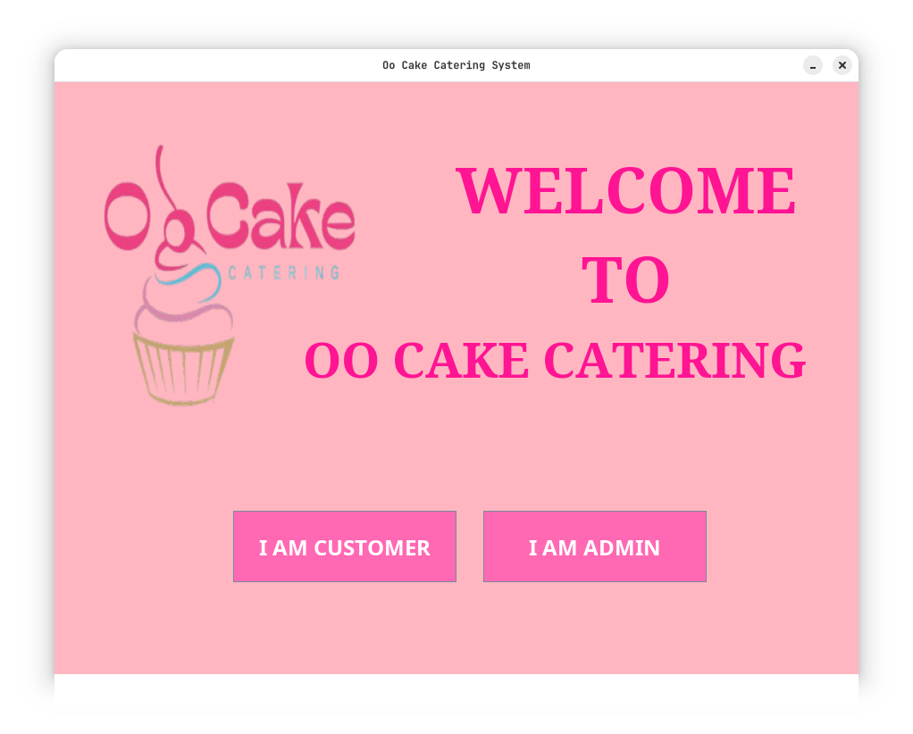
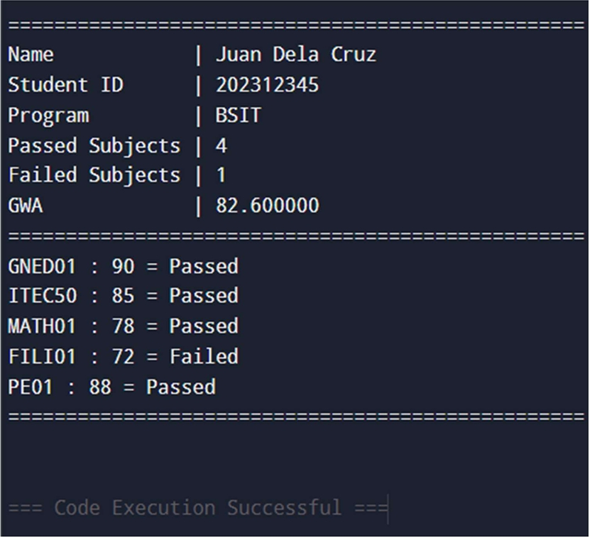
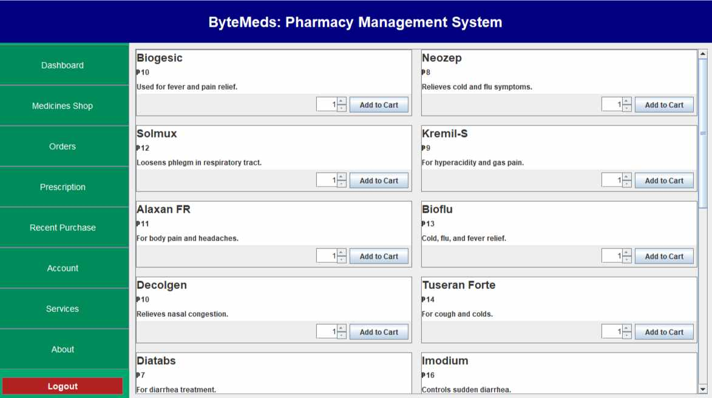

I am a 2nd year college student taking Bachelor of Science in Information Technology (BSIT). I am interested in technology, especially in web development, programming, and learning how software and systems work. I enjoy exploring different coding languages and creating simple projects that help improve my skills. As a future developer, my goal is to become more knowledgeable and experienced in building useful and creative applications. I also want to continue improving my problem-solving skills and become a successful IT professional someday.

Catering Reservation System is an application designed to make booking catering services simple and organized. It allows customers to provide their event details such as name, contact information, event date, venue, number of guests, and preferred menu or food package. Through this system, users can easily submit a reservation request without the need for manual paperwork or in-person coordination. This improves efficiency, reduces errors, and ensures a smoother experience.

The Student Grade Management System is a simple C++ console program that collects student information and grades. The user enters their name, student ID, program, number of subjects, subject codes, and grades. The system checks whether each subject is passed or failed and calculates the student’s General Weighted Average (GWA). All results are displayed clearly at the end of the program.

This system is designed to help and automate the daily operations of a pharmacy, such as inventory tracking, prescription management, billing, and report generation. The current manual or semi-digital processes used by many small to mid- sized pharmacies often result in errors, delays, and inefficiencies. Our proposed system aims to reduce human error, enhance accuracy, and provide a centralized platform for managing medicine stock, customer information, and sales records.